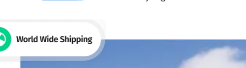
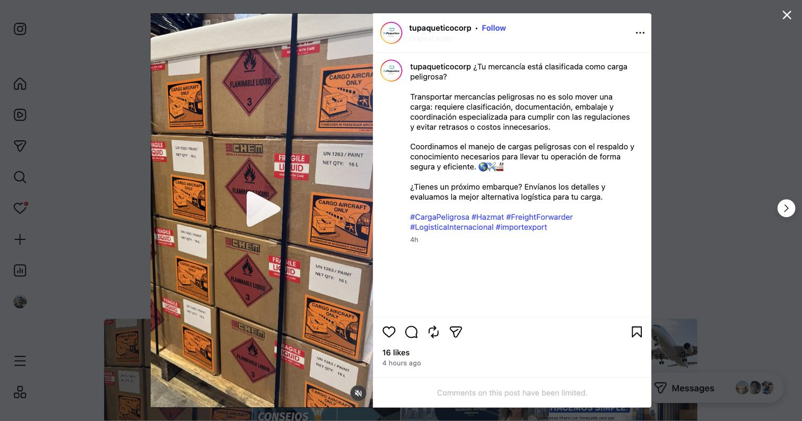
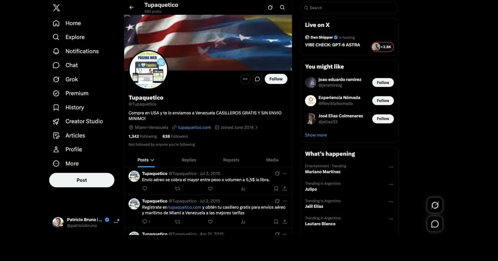

Revisión de UI/UX, responsive, enlaces, formularios, funnel de conversión, WhatsApp, redes sociales, SEO, Open Graph, performance y errores técnicos.
Se revisó el sitio completo (home, /contact/) en desktop, tablet y mobile, incluyendo el código fuente, la consola de JavaScript, las peticiones de red, el robots.txt, el sitemap, los metadatos, y siguiendo cada canal de contacto y cada ícono social hasta su destino real. Comparado con otras auditorías de este tipo, tupaquetico.com parte de una base técnica más sana: no encontramos ningún hallazgo crítico bloqueante, la home carga liviana y rápida, los CTA principales pasan el contraste mínimo de accesibilidad sin problema, y el sitio carga en español por defecto, coincidiendo con su audiencia real. El hallazgo más importante es distinto al de otros sitios que auditamos: acá no hay un canal de WhatsApp roto, es que no existe ningún canal de WhatsApp en todo el sitio, pese a ser el canal que la propia marca ya usa activamente en Instagram para coordinar envíos.
Revisamos el código fuente completo de la home y de /contact/ buscando cada botón, ícono y mención de WhatsApp. El resultado es directo: no existe ningún enlace de WhatsApp en todo el sitio. La única aparición de la palabra "whatsapp" en el HTML de la home es dentro de la configuración genérica del botón de compartir (AddToAny), no un canal real de contacto.
Esto llama la atención porque el propio feed de Instagram, embebido en la misma home, muestra publicaciones de la marca que dan números de WhatsApp para coordinar cargas peligrosas y consultas de envío. Todo el contacto formal del sitio se resuelve, en cambio, con 7 números de teléfono (enlaces tel:) y un email:
| Oficina / ubicación | Contacto |
|---|---|
| EE. UU. (Miami) | tel:+17864837941, tel:+13054698555 |
| Venezuela (Caracas) | tel:+582127141100, tel:+584241243579 |
| China | tel:+8618072322977, tel:+8615215852930 |
| Panamá (Colón) | tel:+50768273038 ext. 101 |
| Email general | mailto:info@tupaquetico.com |
A diferencia de un enlace roto, acá directamente no se intentó: cero botones o íconos de WhatsApp en la home ni en /contact/. Sin embargo, las propias publicaciones de Instagram de Tu Paquetico (visibles en el feed embebido de la misma home) invitan explícitamente a escribir por WhatsApp a números como +1 786-483-7941 y +58 212-714-1100 / +58 424-124-3579 para coordinar cargas. El canal que la marca ya usa y promociona activamente en redes no está integrado en su propio sitio, que hoy solo ofrece llamada telefónica o formulario.
A diferencia de sitios que no tienen ningún formulario, tupaquetico.com sí ofrece uno: al pie de la home (Nombre / Apellido / Email / Teléfono / mensaje) y de nuevo en /contact/, junto al detalle de las 6 oficinas (China, Miami, Caracas, Colón-Panamá, Colombia, Madrid) con dirección, horario, teléfono y email de cada una. No lo enviamos, para no generar un lead real dentro del sistema del negocio.
La página /contact/ lista la oficina de China dos veces. La primera aparición muestra "Horario: 9am a 5:30pm" e incluye el dato "WE CHAT: q11068888"; la segunda, más abajo en la misma página, muestra "9am a 5:00pm" y no incluye WeChat. Parece un resto de copiar y pegar más que información intencional, y deja al visitante sin saber cuál horario es el correcto.
Tanto en el formulario de la home como en el de /contact/, todas las etiquetas de los campos están en español, pero el botón final para enviar dice "Send". Es un detalle chico, pero rompe la coherencia de idioma justo en el paso final del formulario.
Así se ve el recorrido real de un visitante, de punta a punta:
1. Aterriza en tupaquetico.com → el sitio carga en español por defecto (lang="es-VE"), lo que sí coincide con la audiencia real de la marca (envíos hacia Venezuela desde EE. UU., China y España).
2. Ve los dos llamados a la acción del header → "Regístrate" (crear cuenta) y el botón "¡ENVIA HOY!" del hero, ambos con buen contraste visual (ver sección 7).
3. Si quiere resolver una duda antes de decidir → sus únicas opciones son llamar a uno de los 7 teléfonos listados, escribir a info@tupaquetico.com, o completar el formulario de contacto. No hay chat en vivo ni WhatsApp, pese a que es el canal que la marca usa en sus propias redes (ver sección 1).
4. Si busca más detalle de una oficina puntual → /contact/ lista las 6 sedes con teléfono, dirección y horario propios, aunque la de China aparece duplicada con datos que no coinciden (ver sección 2).
No completamos el registro en "Regístrate" porque crearía una cuenta de cliente real en el sistema de Tu Paquetico, algo que excede el alcance de esta auditoría. Quedamos a disposición para revisar ese flujo si se autoriza explícitamente.
El aviso de cambio de dirección se cierra sin problema al tocar la X, pero vuelve a aparecer cada vez que se navega a otra página del sitio, incluso dentro de la misma sesión. No es un error técnico, pero interrumpe la lectura en cada clic.
El widget de Instagram embebido ocupa aproximadamente 3.500 de los 7.818 píxeles de alto de la home (cerca del 45% del scroll total) y, al recorrerlo, parece repetir en loop las mismas ~9 publicaciones. Es contenido real y a favor de la marca (ver sección 8), pero le resta protagonismo al resto del contenido propio de la página.
A diferencia de implementaciones donde el menú hamburguesa deja ver el contenido de fondo, acá el panel mobile es opaco y de ancho completo: no hay superposición de texto ni confusión visual al abrirlo.
Probamos el sitio en tres anchos de pantalla: desktop (~1440px), un ancho intermedio tipo tablet/notebook chica (~972px) y mobile (~500px, el ancho mínimo que permitió redimensionar la ventana del navegador en esta sesión).
En ese ancho, el enlace "Inicio de Sesión" pasa a una segunda línea dentro del menú de navegación y queda superpuesto con el patrón decorativo en X del fondo del hero. El botón "Regístrate", al mismo tiempo, corta su propio texto en dos líneas ("Regist" / "rate") por falta de espacio.
Header a ~972px de ancho.
La etiqueta flotante "World Wide Shipping", superpuesta sobre la imagen del hero, queda cortada en el borde izquierdo de la pantalla en mobile: el círculo del ícono se ve incompleto, fuera del viewport.

Hero en mobile: el ícono del badge queda cortado a la izquierda.
sitemap_index.xml es válido y está bien formado (3 sub-sitemaps), pero uno de ellos incluye /inicio-prueba/, titulada "INICIO PRUEBA - TuPaquetico.com": una copia de la home que parece haber quedado de una prueba, todavía pública y rastreable por Google. Es un riesgo de contenido duplicado que compite, sin necesidad, con la home real por las mismas búsquedas.
robots.txt declara correctamente la ubicación del sitemap y bloquea el rastreo de parámetros de tracking como ?fbclid y ?utm_*, evitando que Google indexe URLs duplicadas por esos parámetros.
Medimos el contraste real (fórmula WCAG 2.1) de los llamados a la acción principales del sitio: el botón del hero "¡ENVIA HOY!", el botón "Regístrate" del header y el botón "Send" del formulario de contacto.
rgb(4,20,31) sobre fondo rgb(179,215,29)El botón "¡ENVIA HOY!" del hero mide aproximadamente 11.2:1 de contraste, muy por encima del mínimo WCAG AA (4.5:1 para texto normal). El botón "Regístrate" del header, con fondo oscuro y texto negro en negrita, también queda cómodamente por encima del mínimo. Es un resultado sólido en el punto donde más importa: los botones que llevan a registrarse o pedir un envío.
El botón de envío del formulario de contacto (fondo rgb(105,114,125), texto blanco) mide aproximadamente 4.9:1: aprueba el mínimo WCAG AA de 4.5:1, pero por un margen chico. Un tono apenas más oscuro de ese mismo gris daría más margen de seguridad, sobre todo en pantallas con brillo bajo.
El sitio enlaza solo 3 redes (Instagram, Facebook y X/Twitter), ubicadas en un bloque "Social Media" a mitad de la home, junto al feed embebido de Instagram — no hay una fila de íconos en el header ni en el footer. Verificamos cada uno navegando al enlace real: los tres funcionan y llevan al perfil correcto, sin íconos rotos.
instagram.com/tupaqueticocorp — 22,3 mil seguidores, 1.883 publicaciones, cuenta de empresa ("Cargo & Freight Company"). Última publicación: hace 4 horas, con contenido real y específico del negocio (clasificación de carga peligrosa, logística internacional). La bio ("Importa fácil a Venezuela 🇺🇸USA|🇨🇳China|🇪🇸España, ✈️Aéreo|🚢Marítimo|Consolidación") coincide de cerca con lo que ofrece el sitio, y enlaza a tupaquetico.com.

Publicación de Instagram, hace 4 horas.
facebook.com/p/Tu-Paquetico-Corp-100054226100708 — 206 seguidores, frente a los 22,3 mil de Instagram. Republica el mismo contenido (misma publicación sobre carga peligrosa, también hace 4 horas), pero con apenas 2 likes. La bio coincide bien con los servicios del sitio (Aéreo/Marítimo, Casillero Gratis, Repack, Seguro, Pickup), pero el alcance es mínimo comparado con el canal principal.
El ícono de X en el sitio funciona técnicamente (no está roto) y lleva a x.com/tupaquetico, una cuenta real de la marca con 638 seguidores — pero su última publicación es del 3 de julio de 2015, más de una década atrás. La bio ("Compra en USA y te lo enviamos a Venezuela CASILLEROS GRATIS Y SIN ENVIO MINIMO") todavía se parece al mensaje actual, pero cualquiera que haga clic ahí desde el sitio cae en una cuenta completamente inactiva, con información de hace 10 años.

Perfil de X: las publicaciones más recientes son de 2015.
El sitio declara lang="es-VE" y carga en español desde el primer momento, lo cual coincide con su audiencia real: envíos entre EE. UU., China y España hacia Venezuela. No hay una desconexión de idioma como la que sí vemos en otros sitios con audiencia similar.
La home tiene meta description, title tag y URL canónica declarados correctamente — a diferencia de sitios donde faltan por completo en varias páginas.
Encontramos dos <h1> en la home: "Envíos y soluciones de Logistica Internacional confiable" y, más abajo, "ITINERARIO DE SALIDAS". Tener un solo <h1> por página ayuda a que Google entienda sin ambigüedad cuál es el tema central de esa página.
| Etiqueta | Estado |
|---|---|
og:title | ✅ Presente |
og:description | ✅ Presente |
og:url / og:type | ✅ Presentes |
twitter:card | ✅ Presente |
og:image | ❌ Ausente |
twitter:image | ❌ Ausente |
og:image y twitter:image están ambas ausentes (nulas). El resto de las etiquetas Open Graph está bien configurado, pero sin imagen, cuando alguien comparte tupaquetico.com en WhatsApp, Facebook o LinkedIn, la vista previa aparece sin ninguna miniatura — solo texto. Es una pieza de "marketing gratis" que hoy se pierde en cada share.
https://geoip.maxmind.com/geoip/v2.1/country/me responde 503 Service Unavailable en todas las cargas probadas. No afecta lo que se ve en pantalla — es una llamada de geolocalización que suele venir por defecto en varios temas/plugins de WordPress — pero queda registrada como error en la consola de red.
No se detectaron excepciones de JS lanzadas por el código propio del sitio durante la navegación. Los únicos mensajes de error en consola vinieron de una extensión del navegador ajena al sitio (no aplica).
Contamos 58 peticiones de red en la carga inicial de la home, con DOMContentLoaded ≈665 ms, load ≈898 ms y TTFB ≈435 ms. Es un resultado notablemente liviano para un sitio WordPress con Elementor y un feed de Instagram embebido.
og:image y twitter:image para que el link se vea bien al compartirse./inicio-prueba/./contact/ (horario y WeChat inconsistentes entre las dos apariciones).<h1> en la home, en vez de dos compitiendo.